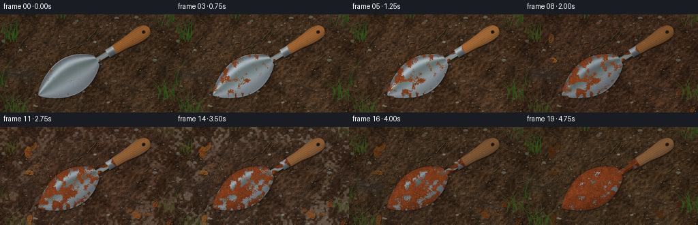
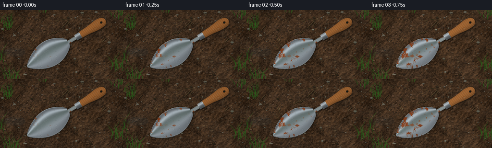

CODING AGENTS AS PIXEL WORLD MODELS
traex/GPT-6.1-Sol · material_0045
点击播放 · 原生 RGB 像素
逐轮保存的候选
回放视频、检查图与代码变化。
每份候选均可单独播放。实际图片检查记录在下方工具轨迹中。
候选 01播放与检查图
点击播放 · 原生 RGB 像素


展开代码变化
--- 上一保存版本
+++ 本次保存版本
@@ -0,0 +1,368 @@
+"""Procedural RGB timelapse: a steel garden trowel weathering on wet garden soil.
+Only numpy, Pillow, and local output helpers are used.
+"""
+from pathlib import Path
+import json
+import math
+import numpy as np
+from PIL import Image, ImageDraw, ImageFilter
+import artifact_io
+
+ROOT = Path(__file__).resolve().parent
+SPEC = json.loads((ROOT / 'task_spec.json').read_text())
+W, H, S = SPEC['width'], SPEC['height'], 3
+WW, HH = W*S, H*S
+rng = np.random.default_rng(45819)
+Y, X = np.mgrid[0:HH, 0:WW].astype(np.float32)
+X /= S; Y /= S
+
+def noise(cell, seed):
+ r = np.random.default_rng(seed)
+ a = r.random((int(H/cell)+3, int(W/cell)+3)).astype(np.float32)
+ im = Image.fromarray(a, mode='F').resize((WW, HH), Image.Resampling.BICUBIC)
+ return np.clip(np.asarray(im), 0, 1)
+
+def smooth(a):
+ a = np.clip(a, 0, 1)
+ return a*a*(3-2*a)
+
+def rgb(a):
+ return Image.fromarray(np.clip(a, 0, 255).astype(np.uint8), 'RGB')
+
+def polygon(draw, coords, fill):
+ draw.polygon([(int(x*S), int(y*S)) for x,y in coords], fill=fill)
+
+def ellipse(draw, box, fill, outline=None, width=1):
+ draw.ellipse(tuple(int(v*S) for v in box), fill=fill, outline=outline, width=max(1, int(width*S)))
+
+def line(draw, pts, fill, width=1):
+ draw.line([(int(x*S),int(y*S)) for x,y in pts], fill=fill, width=max(1, int(width*S)))
+
+def paste_mask(dst, col, m):
+ return dst*(1-m[...,None]) + col*m[...,None]
+
+# Fixed close-up camera coordinate system of the hand tool.
+cx, cy = 142., 67.
+dx, dy = -.858, .514
+e_x, e_y = .514, .858
+U = (X-cx)*dx+(Y-cy)*dy
+V = (X-cx)*e_x+(Y-cy)*e_y
+
+def world(u, v):
+ return cx+dx*u+e_x*v, cy+dy*u+e_y*v
+
+# Smooth, broad cupped blade, small tang, ergonomic wooden grip.
+bw = 30*np.maximum(np.sin(np.pi*np.clip((U+5)/105,0,1)),0)**.72*(1-.18*np.clip(U/100,0,1))
+blade = ((U>=0)&(U<=100)&(np.abs(V)<bw)).astype(np.float32)
+shaft = ((U>=-24)&(U<3)&(np.abs(V)<3.65)).astype(np.float32)
+hr = 7.2 + 3.4*np.exp(-((U+72)/20)**2)
+hr = np.minimum(hr, np.sqrt(np.maximum(0,100-(U+80)**2)) + (U>=-80)*100)
+hr = np.minimum(hr, np.sqrt(np.maximum(0,49-(U+31)**2)) + (U<=-31)*100)
+handle = ((U>=-90)&(U<=-24)&(np.abs(V)<hr)).astype(np.float32)
+ferrule = ((U>=-30)&(U<=-18)&(np.abs(V)<6.5)).astype(np.float32)
+toolmask = np.maximum.reduce([blade, shaft, handle, ferrule])
+q = np.clip(V/np.maximum(bw,1),-1,1)
+edge = np.clip((np.abs(V)/np.maximum(bw,1)-.93)/.07,0,1)*blade
+
+# Correlated fine material fields, fixed over time so corrosion expands in place.
+n_big = noise(19,8)
+n_mid = noise(5.4,9)
+n_fine = noise(1.05,10)
+n_micro = noise(.36,12)
+soil_fine = noise(.65,21)
+soil_mid = noise(3.5,22)
+soil_big = noise(16,23)
+soil_macro = noise(55,24)
+soil_height = .6*soil_mid+.28*soil_fine+.12*soil_big
+hy,hx = np.gradient(soil_height)
+soil_light = np.clip(1 + 2.5*(-hx-hy), .55, 1.5)
+soil_base = (31+soil_big*23+soil_mid*18+soil_fine*12)
+soil = np.stack([soil_base*1.12, soil_base*.80, soil_base*.53],axis=-1)
+soil *= soil_light[...,None]
+soil += (soil_macro-.5)[...,None]*12
+soil -= (smooth((.29-soil_fine)/.18)*11)[...,None]
+
+# Tiny earth clods and irregular pebbles, with nonuniform shading rather than outlines.
+base_img = rgb(soil)
+d = ImageDraw.Draw(base_img)
+for j in range(760):
+ x,y = rng.uniform(-2,W+2),rng.uniform(-2,H+2)
+ r = rng.uniform(.2,1.55) if j<600 else rng.uniform(1.1,3.6)
+ isstone = (j%7==0)
+ tone = rng.uniform(37,91) if not isstone else rng.uniform(76,120)
+ col = (int(tone*1.1),int(tone*.82),int(tone*.59)) if not isstone else (int(tone),int(tone*.96),int(tone*.82))
+ vertices=[]
+ for a in np.linspace(0,2*np.pi,9,endpoint=False):
+ rr=r*rng.uniform(.72,1.2)
+ vertices.append((x+np.cos(a)*rr,y+np.sin(a)*rr*.65))
+ polygon(d,[(xx+.35,yy+.48) for xx,yy in vertices],(28,24,17))
+ polygon(d,vertices,col)
+ top=[(x-r*.5,y-r*.32),(x+r*.13,y-r*.55),(x+r*.62,y-r*.13),(x-r*.2,y)]
+ c=tuple(min(255,v+int(rng.uniform(4,17))) for v in col)
+ polygon(d,top,c)
+ if r>2:
+ line(d,[(x-r*.42,y+.1),(x+r*.16,y+r*.21)],tuple(max(0,v-17) for v in col),.22)
+# Thin root fibres, fragmented sticks on the garden bed.
+for j in range(28):
+ x,y=rng.uniform(0,W),rng.uniform(0,H)
+ length=rng.uniform(5,23); angle=rng.uniform(0,6.28)
+ pts=[(x+math.cos(angle)*length*k/8, y+math.sin(angle)*length*k/8+.6*math.sin(k*.8)) for k in range(9)]
+ line(d,[(a+.6,b+.6) for a,b in pts],(31,25,16),1.4)
+ line(d,pts,(80,65,38),.8)
+ line(d,[(a,b-.3) for a,b in pts],(102,84,52),.22)
+fixed_ground = np.asarray(base_img).astype(np.float32)
+
+# Two contact shadow scales. The higher wooden handle stands slightly off the soil.
+shadow_im=Image.fromarray((toolmask*255).astype(np.uint8),'L')
+shadow_blur=np.asarray(shadow_im.filter(ImageFilter.GaussianBlur(2.1*S))).astype(np.float32)/255
+shadow_close=np.asarray(shadow_im.filter(ImageFilter.GaussianBlur(.7*S))).astype(np.float32)/255
+shadow_blur=np.roll(shadow_blur,(int(3.0*S),int(2.0*S)),axis=(0,1))
+shadow_close=np.roll(shadow_close,(int(1.1*S),int(.7*S)),axis=(0,1))
+# Dark visible rolled-over steel edge below the top surface.
+thickness=np.roll(blade,(int(.8*S),int(.3*S)),axis=(0,1))*(1-blade)
+
+rustfield = .30*n_big+.42*n_mid+.21*n_fine+.07*n_micro
+rustfield += .065*edge + .055*np.exp(-((U-9)/13)**2)
+rustdist = rustfield[blade>0]
+# Steel follows a concave, curved cross-section, with long soft reflected strips.
+reflect_q=q+.09*np.sin(U*.042)
+metal_lum=103 + 79*np.exp(-((reflect_q+.53)/.18)**2)+37*np.exp(-((reflect_q-.40)/.34)**2)
+metal_lum+=13*np.sin(U*.018)+9*q
+metal_lum+=2.1*np.sin(V*56+.35*np.sin(U*.08))+(n_micro-.5)*7
+metal_lum+=edge*(24-19*q)
+steel=np.stack([metal_lum*.94,metal_lum,metal_lum*1.045],axis=-1)
+# An extremely faint cool sky/green garden reflection in the steel scoop.
+steel[:,:,1]+=6*np.exp(-((q+.15)/.34)**2)
+
+# Wood grain runs down the entire handle, with a small knot and longitudinal checks.
+grainphase=V*2.4+.29*np.sin(U*.105)+.06*(n_mid-.5)
+gr = np.sin(grainphase)+.33*np.sin(grainphase*3.4)
+grain = 8*gr+3.5*(n_micro-.5)
+wood_q=np.clip(V/np.maximum(hr,.1),-1,1)
+wood_light=.76+.30*np.sqrt(np.maximum(0,1-wood_q**2))-.13*wood_q
+wood = np.stack([158+grain*1.2,99+grain,49+grain*.67],axis=-1)*wood_light[...,None]
+knotdist=np.sqrt(((U+62)/2.4)**2+((V-2.8)/.85)**2)
+knotring=np.exp(-((knotdist-1)/.16)**2)+.6*np.exp(-((knotdist-1.7)/.17)**2)
+wood-=knotring[...,None]*14
+checks=(np.sin(V*6.3+.15*np.sin(U*.07))>.985)&(n_big>.53)&(U<-34)
+
+# Procedural vegetation along the edge of the close-up.
+grasses=[]
+for x0,y0,count in [(15,36,22),(24,143,18),(245,122,20),(96,-1,18),(246,11,11),(0,104,8)]:
+ for j in range(count):
+ x=x0+rng.normal(0,8);y=y0+rng.normal(0,4)
+ length=rng.uniform(8,34)
+ spread=rng.uniform(-15,15)
+ grasses.append((x,y,length,spread,rng.uniform(.45,1.35),rng.uniform(.8,1.15),rng.uniform(0,6.28)))
+
+def draw_grass(im,t,season):
+ layer=Image.new('RGBA',(WW,HH))
+ dd=ImageDraw.Draw(layer)
+ growth = 1-.40*np.exp(-((t-.66)/.19)**2)
+ green = 1-.84*np.exp(-((t-.62)/.23)**2)
+ for j,(x,y,length,spread,wide,brightness,phase) in enumerate(grasses):
+ length=length*growth
+ wind=.6*math.sin(phase+t*13)
+ yy=y-length
+ xx=x+spread+wind
+ # Narrow curved leaf, not a straight polygonal line.
+ lft=[];rgt=[]
+ for k in range(11):
+ z=k/10
+ xc=x+(spread+wind)*z*z
+ yc=y-length*z
+ wd=wide*(1-z)*.5
+ lft.append((xc-wd,yc));rgt.append((xc+wd,yc))
+ col=(int((76-37*green)*brightness),int((68+23*green)*brightness),int((31-6*green)*brightness),245)
+ polygon(dd,lft+rgt[::-1],col)
+ line(dd,[(x,y),(x+spread*.3,y-length*.55),(xx,yy)],(int(94-33*green),int(87+21*green),42,105),.20)
+ im.alpha_composite(layer)
+
+# Autumn leaves gradually accumulate, later darken and settle into the soil.
+leafdata=[]
+for j in range(21):
+ # Keep the blade unobscured, while fallen leaves make the seasonal change legible.
+ if j<8:
+ x,y=rng.uniform(5,59),rng.uniform(0,72)
+ elif j<15:
+ x,y=rng.uniform(188,266),rng.uniform(72,151)
+ else:
+ x,y=rng.uniform(8,188),rng.uniform(130,151)
+ leafdata.append((x,y,rng.uniform(6,14),rng.uniform(.35,.63),rng.uniform(0,6.28),rng.uniform(.26,.54),rng.random()))
+
+def draw_leaves(im,t):
+ layer=Image.new('RGBA',(WW,HH));dd=ImageDraw.Draw(layer)
+ for x,y,L,ratio,ang,birth,variation in leafdata:
+ alpha=float(smooth((t-birth)/.095))
+ decay=float(smooth((t-.69)/.3))
+ if alpha<.005:continue
+ ca,sa=math.cos(ang),math.sin(ang)
+ def trans(a,b):return x+a*ca-b*sa,y+a*sa+b*ca
+ shape=[]
+ for k in range(25):
+ a=k/24*np.pi*2
+ longitudinal=L*.5*np.cos(a)
+ transverse=L*ratio*.5*np.sin(a)*(1+.06*np.sin(a*11+variation*3))
+ shape.append(trans(longitudinal,transverse))
+ shadow=[(a+.8,b+.8) for a,b in shape]
+ polygon(dd,shadow,(12,17,10,int(90*alpha)))
+ c=np.array([137+variation*23,67+variation*30,25+variation*10])*(1-.45*decay)
+ polygon(dd,shape,tuple(c.astype(int))+(int(245*alpha),))
+ # Individual lobes and asymmetric veins.
+ for k in range(7):
+ u=(k/6-.5)*L*.83
+ width=L*ratio*.46*np.sqrt(max(0,1-(u/(L*.5))**2))
+ veincol=(int(c[0]*.70),int(c[1]*.72),int(c[2]*.68),int(120*alpha))
+ line(dd,[trans(u,0),trans(u+L*.13,width*.88)],veincol,.25)
+ line(dd,[trans(u,0),trans(u+L*.10,-width*.92)],veincol,.25)
+ line(dd,[trans(-L*.49,0),trans(L*.57,0)],(int(c[0]*.75),int(c[1]*.7),int(c[2]*.65),int(190*alpha)),.4)
+ # Dusty, mottled weathering on each leaf.
+ lr=np.random.default_rng(int(variation*100000)+53)
+ for j in range(18):
+ a,b=lr.uniform(-L*.4,L*.4),lr.uniform(-L*ratio*.31,L*ratio*.31)
+ xx,yy=trans(a,b)
+ ellipse(dd,(xx-.23,yy-.17,xx+.23,yy+.17),(46,31,18,int((25+80*decay)*alpha)))
+ im.alpha_composite(layer)
+
+# A few embedded gravel stones large enough to give a natural sense of scale.
+# Surface droplets chosen once within the blade and handle; no random texture crawl.
+drops=[]
+for j in range(32):
+ u=rng.uniform(8,87); w=float(30*max(math.sin(math.pi*(u+5)/105),0)**.72*(1-.18*u/100))
+ v=rng.uniform(-w*.83,w*.83)
+ x,y=world(u,v)
+ drops.append((x,y,rng.uniform(.5,1.65),rng.uniform(0,6.28)))
+for j in range(7):
+ x,y=world(rng.uniform(-78,-36),rng.uniform(-5,5))
+ drops.append((x,y,rng.uniform(.6,1.2),rng.uniform(0,6.28)))
+
+# A very shallow wet depression off to the left; it catches episodic rain rings.
+puddle=((X-30)/25)**2+((Y-88)/10)**2
+puddle_m=smooth((1-puddle)/.3)*(.8+.2*n_mid)*(1-toolmask)
+
+frames=[]
+for frame in range(SPEC['frames']):
+ t=frame/(SPEC['frames']-1)
+ winter=math.exp(-((t-.67)/.095)**2)
+ autumn=math.exp(-((t-.46)/.17)**2)
+ spring=float(smooth((t-.78)/.21))
+ # Overcast rain episodes interleave with warmer dry timelapse exposures.
+ wet=.55+.32*math.sin(t*math.pi*5+.7)
+ wet=np.clip(wet*(1-.65*winter),.10,.94)
+ illumination=1.05-.14*wet-.08*winter+.035*math.sin(t*11)
+ ground=fixed_ground.copy()*illumination
+ ground*=np.array([1+.05*autumn,1-.025*autumn+.025*spring,1+.14*winter])
+ # Dark wet soil and local highlights of open sky on tiny water films.
+ gloss=smooth((soil_fine+.19*soil_mid-.84)/.13)*wet
+ ground+=gloss[...,None]*np.array([9,12,14])
+ pcol=ground*.72+np.array([15,19,21])
+ ground=paste_mask(ground,pcol,puddle_m*wet*.7)
+ if winter>.015:
+ frost=smooth((soil_mid*.5+soil_big*.5-.58)/.10)*winter
+ outer=smooth((np.sqrt(((X-132)/132)**2+((Y-74)/77)**2)-.46)/.44)
+ frost*=outer*.40*(1-puddle_m)
+ ground=paste_mask(ground,np.broadcast_to(np.array([175,179,169]),ground.shape),frost)
+ scene=rgb(ground).convert('RGBA')
+ draw_leaves(scene,t)
+ draw_grass(scene,t,None)
+ a=np.asarray(scene.convert('RGB')).astype(np.float32)
+ # Slight accumulated iron staining of the bed immediately around the blade.
+ stain=shadow_blur*(1-toolmask)*t*t*.18
+ a=paste_mask(a,np.broadcast_to(np.array([93,47,25]),a.shape),stain)
+ a*= (1-.24*shadow_blur-.27*shadow_close)[...,None]
+ a=paste_mask(a,np.broadcast_to(np.array([57,60,60])*(1-.44*t),a.shape),thickness)
+ # Monotone expansion of the same corrosion islands over the seasons.
+ cover=.003+.92*t**1.15
+ cutoff=float(np.quantile(rustdist,1-cover))
+ rust=smooth((rustfield-cutoff+.023)/.046)*blade
+ rough=.41*n_fine+.34*n_mid+.25*n_micro
+ rustcol=np.stack([78+85*rough,34+45*rough,16+22*rough],axis=-1)
+ # Corroded areas retain a muted scoop shading, with dense pits and oxide flakes.
+ rustcol*= (.75+.24*np.sqrt(np.maximum(0,1-q*q))-.10*q)[...,None]
+ pits=smooth((.30-n_micro)/.21)*smooth((n_fine-.47)/.17)
+ rustcol-=pits[...,None]*np.array([24,16,9])
+ rustcol+=smooth((n_micro-.77)/.15)[...,None]*np.array([15,9,4])
+ fresh=steel*(1-.14*t)*illumination
+ # Fine orange halos around the developing corrosion patches.
+ halo=smooth((rustfield-cutoff+.070)/.050)*(1-rust)*blade
+ fresh=fresh*(1-halo[...,None]*.17)+halo[...,None]*np.array([15,3,-8])
+ bladecol=fresh*(1-rust[...,None])+rustcol*rust[...,None]
+ # The stamped centre ridge and bright curled rim still outline the scoop.
+ rim_high=smooth((np.abs(q)-.965)/.02)*blade*(1-rust*.83)
+ bladecol+=rim_high[...,None]*np.array([26,26,23])
+ a=paste_mask(a,bladecol,blade)
+ shaftcol=np.stack([112+23*np.cos(V*.43),119+25*np.cos(V*.43),119+25*np.cos(V*.43)],axis=-1)
+ shaft_rust=smooth((n_mid-.8+.7*t)/.18)
+ shaftcol=shaftcol*(1-shaft_rust[...,None])+rustcol*shaft_rust[...,None]
+ a=paste_mask(a,shaftcol*illumination,shaft*(1-blade))
+ aged=wood*(1-.24*t)+np.array([12,17,21])[None,None,:]*t
+ aged-=checks[...,None]*(5+16*t)
+ aged*=1-.085*wet
+ a=paste_mask(a,aged*illumination,handle)
+ f_lum=104+67*np.exp(-((V+2.5)/2.3)**2)-5*V
+ fcol=np.stack([f_lum*.95,f_lum,f_lum*1.03],axis=-1)
+ fr=smooth((n_mid-.82+.77*t)/.22)
+ fcol=fcol*(1-fr[...,None])+rustcol*fr[...,None]
+ # Rolled ferrule rings at the end of the wooden grip.
+ bands=np.exp(-((U+29.0)/.45)**2)+np.exp(-((U+19.1)/.45)**2)
+ fcol+=bands[...,None]*(22-14*t)
+ a=paste_mask(a,fcol*illumination,ferrule)
+ # Drilled hanging hole, circular in local handle coordinates.
+ hole_dist=np.sqrt(((U+80.0)/2.30)**2+((V+.1)/2.05)**2)
+ rim_hole=smooth((1.32-hole_dist)/.11)*handle
+ hole=smooth((.95-hole_dist)/.08)*handle
+ a=paste_mask(a,np.broadcast_to(np.array([79,47,22])*(1-.15*t),a.shape),rim_hole)
+ a=paste_mask(a,np.broadcast_to(np.array([22,25,20]),a.shape),hole)
+ scene=rgb(a).convert('RGBA')
+ surface=Image.new('RGBA',(WW,HH));dd=ImageDraw.Draw(surface)
+ # Subtle tang seam and a few longitudinal scratches in residual clean metal.
+ for j in range(18):
+ rr=np.random.default_rng(130+j)
+ u=rr.uniform(9,69); v=rr.uniform(-15,15); length=rr.uniform(3,13)
+ px,py=world(u,v)
+ ix,iy=int(px*S),int(py*S)
+ if 0<=ix<WW and 0<=iy<HH and blade[iy,ix] and rust[iy,ix]<.35:
+ line(dd,[world(u,v),world(u+length,v+.1)],(211,214,214,int(25*(1-t))),.22)
+ # Rounded beads have a dark refracted edge and a very small white sky highlight.
+ for j,(x,y,r,phase) in enumerate(drops):
+ vis=wet*(.66+.34*math.sin(phase+frame*.72))
+ if vis<.16:continue
+ ellipse(dd,(x-r,y-r*.68,x+r,y+r*.68),(110,133,138,int(30*vis)),(28,35,34,int(118*vis)),.24)
+ ellipse(dd,(x-r*.64,y-r*.45,x-r*.02,y-r*.03),(219,229,228,int(193*vis)))
+ line(dd,[(x+r*.05,y+r*.41),(x+r*.63,y+r*.2)],(176,190,193,int(100*vis)),.2)
+ # Sky reflections on the water-filled depression and rain splash crowns.
+ rain_strength=wet*(1-.82*winter)
+ for j in range(4):
+ rr=np.random.default_rng(700+frame*11+j)
+ x=rr.uniform(9,47); y=rr.uniform(80,96)
+ r=rr.uniform(1.2,4.8)
+ bbox=(int((x-r)*S),int((y-r*.31)*S),int((x+r)*S),int((y+r*.31)*S))
+ dd.arc(bbox,15,170,fill=(139,150,148,int(72*rain_strength)),width=1)
+ dd.arc(bbox,205,320,fill=(106,122,122,int(62*rain_strength)),width=1)
+ scene.alpha_composite(surface)
+ # Thin softly translucent rain traces, distinct from permanent scratches.
+ rain=Image.new('RGBA',(WW,HH));dd=ImageDraw.Draw(rain)
+ rr=np.random.default_rng(3401+frame*37)
+ for j in range(int(20+34*rain_strength)):
+ x=rr.uniform(-5,W+8); y=rr.uniform(-10,H+4)
+ length=rr.uniform(4,13)
+ strength=int(rr.uniform(28,74)*rain_strength)
+ line(dd,[(x,y),(x-2.0,y+length)],(179,196,199,strength),rr.uniform(.17,.35))
+ # Tiny impacts outside the tool; they change with every wet exposure.
+ for j in range(int(16*rain_strength)):
+ x,y=rr.uniform(0,W),rr.uniform(0,H)
+ ix,iy=int(x*S),int(y*S)
+ if toolmask[iy,ix]>.1:continue
+ ellipse(dd,(x-1.5,y-.4,x+1.5,y+.4),None,(138,151,148,int(80*rain_strength)),.17)
+ line(dd,[(x-.3,y-.3),(x-.6,y-1.4)],(156,167,164,int(70*rain_strength)),.18)
+ scene.alpha_composite(rain)
+ final=np.asarray(scene.convert('RGB')).astype(np.float32)
+ # Mild lens falloff and coherent grain, subdued, not a synthetic frame border.
+ vignette=1-.11*((X-W*.51)/(W*.73))**2-.09*((Y-H*.52)/(H*.80))**2
+ final*=vignette[...,None]
+ final+= (n_micro-.5)[...,None]*1.2
+ out=rgb(final).resize((W,H),Image.Resampling.LANCZOS)
+ frames.append(np.asarray(out,dtype=np.uint8))
+ print(f'frame {frame+1:02d}/{SPEC["frames"]}: corrosion target {cover:.3f}, rain {rain_strength:.2f}',flush=True)
+artifact_io.save(np.stack(frames),ROOT)
+print('Saved RGB frames, pixels.npz, inspection sheets, and index.html.',flush=True)
可观测工具轨迹
实际执行的命令与返回图片。
命令 1exit 0
/bin/bash -lc "ls -la && cat prompt.txt && printf '\\n---RULES---\\n' && cat GENERATION_RULES.md && printf '\\n---SPEC---\\n' && cat task_spec.json"
命令 2exit 0
/bin/bash -lc 'cat artifact_io.py'
命令 3exit 0
/bin/bash -lc "python - <<'PY'
import numpy,PIL
print('numpy',numpy.__version__,'PIL',PIL.__version__)
PY"命令 4exit 0
/bin/bash -lc "cat > generate.py <<'PY'
\"\"\"Procedural RGB timelapse: a steel garden trowel weathering on wet garden soil.
Only numpy, Pillow, and local output helpers are used.
\"\"\"
from pathlib import Path
import json
import math
import numpy as np
from PIL import Image, ImageDraw, ImageFilter
import artifact_io
ROOT = Path(__file__).resolve().parent
SPEC = json.loads((ROOT / 'task_spec.json').read_text())
W, H, S = SPEC['width'], SPEC['height'], 3
WW, HH = W*S, H*S
rng = np.random.default_rng(45819)
Y, X = np.mgrid[0:HH, 0:WW].astype(np.float32)
X /= S; Y /= S
def noise(cell, seed):
r = np.random.default_rng(seed)
a = r.random((int(H/cell)+3, int(W/cell)+3)).astype(np.float32)
im = Image.fromarray(a, mode='F').resize((WW, HH), Image.Resampling.BICUBIC)
return np.clip(np.asarray(im), 0, 1)
def smooth(a):
a = np.clip(a, 0, 1)
return a*a*(3-2*a)
def rgb(a):
return Image.fromarray(np.clip(a, 0, 255).astype(np.uint8), 'RGB')
def polygon(draw, coords, fill):
draw.polygon([(int(x*S), int(y*S)) for x,y in coords], fill=fill)
def ellipse(draw, box, fill, outline=None, width=1):
draw.ellipse(tuple(int(v*S) for v in box), fill=fill, outline=outline, width=max(1, int(width*S)))
def line(draw, pts, fill, width=1):
draw.line([(int(x*S),int(y*S)) for x,y in pts], fill=fill, width=max(1, int(width*S)))
def paste_mask(dst, col, m):
return dst*(1-m[...,None]) + col*m[...,None]
# Fixed close-up camera coordinate system of the hand tool.
cx, cy = 142., 67.
dx, dy = -.858, .514
e_x, e_y = .514, .858
U = (X-cx)*dx+(Y-cy)*dy
V = (X-cx)*e_x+(Y-cy)*e_y
def world(u, v):
return cx+dx*u+e_x*v, cy+dy*u+e_y*v
# Smooth, broad cupped blade, small tang, ergonomic wooden grip.
bw = 30*np.maximum(np.sin(np.pi*np.clip((U+5)/105,0,1)),0)**.72*(1-.18*np.clip(U/100,0,1))
blade = ((U>=0)&(U<=100)&(np.abs(V)<bw)).astype(np.float32)
shaft = ((U>=-24)&(U<3)&(np.abs(V)<3.65)).astype(np.float32)
hr = 7.2 + 3.4*np.exp(-((U+72)/20)**2)
hr = np.minimum(hr, np.sqrt(np.maximum(0,100-(U+80)**2)) + (U>=-80)*100)
hr = np.minimum(hr, np.sqrt(np.maximum(0,49-(U+31)**2)) + (U<=-31)*100)
handle = ((U>=-90)&(U<=-24)&(np.abs(V)<hr)).astype(np.float32)
ferrule = ((U>=-30)&(U<=-18)&(np.abs(V)<6.5)).astype(np.float32)
toolmask = np.maximum.reduce([blade, shaft, handle, ferrule])
q = np.clip(V/np.maximum(bw,1),-1,1)
edge = np.clip((np.abs(V)/np.maximum(bw,1)-.93)/.07,0,1)*blade
# Correlated fine material fields, fixed over time so corrosion expands in place.
n_big = noise(19,8)
n_mid = noise(5.4,9)
n_fine = noise(1.05,10)
n_micro = noise(.36,12)
soil_fine = noise(.65,21)
soil_mid = noise(3.5,22)
soil_big = noise(16,23)
soil_macro = noise(55,24)
soil_height = .6*soil_mid+.28*soil_fine+.12*soil_big
hy,hx = np.gradient(soil_height)
soil_light = np.clip(1 + 2.5*(-hx-hy), .55, 1.5)
soil_base = (31+soil_big*23+soil_mid*18+soil_fine*12)
soil = np.stack([soil_base*1.12, soil_base*.80, soil_base*.53],axis=-1)
soil *= soil_light[...,None]
soil += (soil_macro-.5)[...,None]*12
soil -= (smooth((.29-soil_fine)/.18)*11)[...,None]
# Tiny earth clods and irregular pebbles, with nonuniform shading rather than outlines.
base_img = rgb(soil)
d = ImageDraw.Draw(base_img)
for j in range(760):
x,y = rng.uniform(-2,W+2),rng.uniform(-2,H+2)
r = rng.uniform(.2,1.55) if j<600 else rng.uniform(1.1,3.6)
isstone = (j%7==0)
tone = rng.uniform(37,91) if not isstone else rng.uniform(76,120)
col = (int(tone*1.1),int(tone*.82),int(tone*.59)) if not isstone else (int(tone),int(tone*.96),int(tone*.82))
vertices=[]
for a in np.linspace(0,2*np.pi,9,endpoint=False):
rr=r*rng.uniform(.72,1.2)
vertices.append((x+np.cos(a)*rr,y+np.sin(a)*rr*.65))
polygon(d,[(xx+.35,yy+.48) for xx,yy in vertices],(28,24,17))
polygon(d,vertices,col)
top=[(x-r*.5,y-r*.32),(x+r*.13,y-r*.55),(x+r*.62,y-r*.13),(x-r*.2,y)]
c=tuple(min(255,v+int(rng.uniform(4,17))) for v in col)
polygon(d,top,c)
if r>2:
line(d,[(x-r*.42,y+.1),(x+r*.16,y+r*.21)],tuple(max(0,v-17) for v in col),.22)
# Thin root fibres, fragmented sticks on the garden bed.
for j in range(28):
x,y=rng.uniform(0,W),rng.uniform(0,H)
length=rng.uniform(5,23); angle=rng.uniform(0,6.28)
pts=[(x+math.cos(angle)*length*k/8, y+math.sin(angle)*length*k/8+.6*math.sin(k*.8)) for k in range(9)]
line(d,[(a+.6,b+.6) for a,b in pts],(31,25,16),1.4)
line(d,pts,(80,65,38),.8)
line(d,[(a,b-.3) for a,b in pts],(102,84,52),.22)
fixed_ground = np.asarray(base_img).astype(np.float32)
# Two contact shadow scales. The higher wooden handle stands slightly off the soil.
shadow_im=Image.fromarray((toolmask*255).astype(np.uint8),'L')
shadow_blur=np.asarray(shadow_im.filter(ImageFilter.GaussianBlur(2.1*S))).astype(np.float32)/255
shadow_close=np.asarray(shadow_im.filter(ImageFilter.GaussianBlur(.7*S))).astype(np.float32)/255
shadow_blur=np.roll(shadow_blur,(int(3.0*S),int(2.0*S)),axis=(0,1))
shadow_close=np.roll(shadow_close,(int(1.1*S),int(.7*S)),axis=(0,1))
# Dark visible rolled-over steel edge below the top surface.
thickness=np.roll(blade,(int(.8*S),int(.3*S)),axis=(0,1))*(1-blade)
rustfield = .30*n_big+.42*n_mid+.21*n_fine+.07*n_micro
rustfield += .065*edge + .055*np.exp(-((U-9)/13)**2)
rustdist = rustfield[blade>0]
# Steel follows a concave, curved cross-section, with long soft reflected strips.
reflect_q=q+.09*np.sin(U*.042)
metal_lum=103 + 79*np.exp(-((reflect_q+.53)/.18)**2)+37*np.exp(-((reflect_q-.40)/.34)**2)
metal_lum+=13*np.sin(U*.018)+9*q
metal_lum+=2.1*np.sin(V*56+.35*np.sin(U*.08))+(n_micro-.5)*7
metal_lum+=edge*(24-19*q)
steel=np.stack([metal_lum*.94,metal_lum,metal_lum*1.045],axis=-1)
# An extremely faint cool sky/green garden reflection in the steel scoop.
steel[:,:,1]+=6*np.exp(-((q+.15)/.34)**2)
# Wood grain runs down the entire handle, with a small knot and longitudinal checks.
grainphase=V*2.4+.29*np.sin(U*.105)+.06*(n_mid-.5)
gr = np.sin(grainphase)+.33*np.sin(grainphase*3.4)
grain = 8*gr+3.5*(n_micro-.5)
wood_q=np.clip(V/np.maximum(hr,.1),-1,1)
wood_light=.76+.30*np.sqrt(np.maximum(0,1-wood_q**2))-.13*wood_q
wood = np.stack([158+grain*1.2,99+grain,49+grain*.67],axis=-1)*wood_light[...,None]
knotdist=np.sqrt(((U+62)/2.4)**2+((V-2.8)/.85)**2)
knotring=np.exp(-((knotdist-1)/.16)**2)+.6*np.exp(-((knotdist-1.7)/.17)**2)
wood-=knotring[...,None]*14
checks=(np.sin(V*6.3+.15*np.sin(U*.07))>.985)&(n_big>.53)&(U<-34)
# Procedural vegetation along the edge of the close-up.
grasses=[]
for x0,y0,count in [(15,36,22),(24,143,18),(245,122,20),(96,-1,18),(246,11,11),(0,104,8)]:
for j in range(count):
x=x0+rng.normal(0,8);y=y0+rng.normal(0,4)
length=rng.uniform(8,34)
spread=rng.uniform(-15,15)
grasses.append((x,y,length,spread,rng.uniform(.45,1.35),rng.uniform(.8,1.15),rng.uniform(0,6.28)))
def draw_grass(im,t,season):
layer=Image.new('RGBA',(WW,HH))
dd=ImageDraw.Draw(layer)
growth = 1-.40*np.exp(-((t-.66)/.19)**2)
green = 1-.84*np.exp(-((t-.62)/.23)**2)
for j,(x,y,length,spread,wide,brightness,phase) in enumerate(grasses):
length=length*growth
wind=.6*math.sin(phase+t*13)
yy=y-length
xx=x+spread+wind
# Narrow curved leaf, not a straight polygonal line.
lft=[];rgt=[]
for k in range(11):
z=k/10
xc=x+(spread+wind)*z*z
yc=y-length*z
wd=wide*(1-z)*.5
lft.append((xc-wd,yc));rgt.append((xc+wd,yc))
col=(int((76-37*green)*brightness),int((68+23*green)*brightness),int((31-6*green)*brightness),245)
polygon(dd,lft+rgt[::-1],col)
line(dd,[(x,y),(x+spread*.3,y-length*.55),(xx,yy)],(int(94-33*green),int(87+21*green),42,105),.20)
im.alpha_composite(layer)
# Autumn leaves gradually accumulate, later darken and settle into the soil.
leafdata=[]
for j in range(21):
# Keep the blade unobscured, while fallen leaves make the seasonal change legible.
if j<8:
x,y=rng.uniform(5,59),rng.uniform(0,72)
elif j<15:
x,y=rng.uniform(188,266),rng.uniform(72,151)
else:
x,y=rng.uniform(8,188),rng.uniform(130,151)
leafdata.append((x,y,rng.uniform(6,14),rng.uniform(.35,.63),rng.uniform(0,6.28),rng.uniform(.26,.54),rng.random()))
def draw_leaves(im,t):
layer=Image.new('RGBA',(WW,HH));dd=ImageDraw.Draw(layer)
for x,y,L,ratio,ang,birth,variation in leafdata:
alpha=float(smooth((t-birth)/.095))
decay=float(smooth((t-.69)/.3))
if alpha<.005:continue
ca,sa=math.cos(ang),math.sin(ang)
def trans(a,b):return x+a*ca-b*sa,y+a*sa+b*ca
shape=[]
for k in range(25):
a=k/24*np.pi*2
longitudinal=L*.5*np.cos(a)
transverse=L*ratio*.5*np.sin(a)*(1+.06*np.sin(a*11+variation*3))
shape.append(trans(longitudinal,transverse))
shadow=[(a+.8,b+.8) for a,b in shape]
polygon(dd,shadow,(12,17,10,int(90*alpha)))
c=np.array([137+variation*23,67+variation*30,25+variation*10])*(1-.45*decay)
polygon(dd,shape,tuple(c.astype(int))+(int(245*alpha),))
# Individual lobes and asymmetric veins.
for k in range(7):
u=(k/6-.5)*L*.83
width=L*ratio*.46*np.sqrt(max(0,1-(u/(L*.5))**2))
veincol=(int(c[0]*.70),int(c[1]*.72),int(c[2]*.68),int(120*alpha))
line(dd,[trans(u,0),trans(u+L*.13,width*.88)],veincol,.25)
line(dd,[trans(u,0),trans(u+L*.10,-width*.92)],veincol,.25)
line(dd,[trans(-L*.49,0),trans(L*.57,0)],(int(c[0]*.75),int(c[1]*.7),int(c[2]*.65),int(190*alpha)),.4)
# Dusty, mottled weathering on each leaf.
lr=np.random.default_rng(int(variation*100000)+53)
for j in range(18):
a,b=lr.uniform(-L*.4,L*.4),lr.uniform(-L*ratio*.31,L*ratio*.31)
xx,yy=trans(a,b)
ellipse(dd,(xx-.23,yy-.17,xx+.23,yy+.17),(46,31,18,int((25+80*decay)*alpha)))
im.alpha_composite(layer)
# A few embedded gravel stones large enough to give a natural sense of scale.
# Surface droplets chosen once within the blade and handle; no random texture crawl.
drops=[]
for j in range(32):
u=rng.uniform(8,87); w=float(30*max(math.sin(math.pi*(u+5)/105),0)**.72*(1-.18*u/100))
v=rng.uniform(-w*.83,w*.83)
x,y=world(u,v)
drops.append((x,y,rng.uniform(.5,1.65),rng.uniform(0,6.28)))
for j in range(7):
x,y=world(rng.uniform(-78,-36),rng.uniform(-5,5))
drops.append((x,y,rng.uniform(.6,1.2),rng.uniform(0,6.28)))
# A very shallow wet depression off to the left; it catches episodic rain rings.
puddle=((X-30)/25)**2+((Y-88)/10)**2
puddle_m=smooth((1-puddle)/.3)*(.8+.2*n_mid)*(1-toolmask)
frames=[]
for frame in range(SPEC['frames']):
t=frame/(SPEC['frames']-1)
winter=math.exp(-((t-.67)/.095)**2)
autumn=math.exp(-((t-.46)/.17)**2)
spring=float(smooth((t-.78)/.21))
# Overcast rain episodes interleave with warmer dry timelapse exposures.
wet=.55+.32*math.sin(t*math.pi*5+.7)
wet=np.clip(wet*(1-.65*winter),.10,.94)
illumination=1.05-.14*wet-.08*winter+.035*math.sin(t*11)
ground=fixed_ground.copy()*illumination
ground*=np.array([1+.05*autumn,1-.025*autumn+.025*spring,1+.14*winter])
# Dark wet soil and local highlights of open sky on tiny water films.
gloss=smooth((soil_fine+.19*soil_mid-.84)/.13)*wet
ground+=gloss[...,None]*np.array([9,12,14])
pcol=ground*.72+np.array([15,19,21])
ground=paste_mask(ground,pcol,puddle_m*wet*.7)
if winter>.015:
frost=smooth((soil_mid*.5+soil_big*.5-.58)/.10)*winter
outer=smooth((np.sqrt(((X-132)/132)**2+((Y-74)/77)**2)-.46)/.44)
frost*=outer*.40*(1-puddle_m)
ground=paste_mask(ground,np.broadcast_to(np.array([175,179,169]),ground.shape),frost)
scene=rgb(ground).convert('RGBA')
draw_leaves(scene,t)
draw_grass(scene,t,None)
a=np.asarray(scene.convert('RGB')).astype(np.float32)
# Slight accumulated iron staining of the bed immediately around the blade.
stain=shadow_blur*(1-toolmask)*t*t*.18
a=paste_mask(a,np.broadcast_to(np.array([93,47,25]),a.shape),stain)
a*= (1-.24*shadow_blur-.27*shadow_close)[...,None]
a=paste_mask(a,np.broadcast_to(np.array([57,60,60])*(1-.44*t),a.shape),thickness)
# Monotone expansion of the same corrosion islands over the seasons.
cover=.003+.92*t**1.15
cutoff=float(np.quantile(rustdist,1-cover))
rust=smooth((rustfield-cutoff+.023)/.046)*blade
rough=.41*n_fine+.34*n_mid+.25*n_micro
rustcol=np.stack([78+85*rough,34+45*rough,16+22*rough],axis=-1)
# Corroded areas retain a muted scoop shading, with dense pits and oxide flakes.
rustcol*= (.75+.24*np.sqrt(np.maximum(0,1-q*q))-.10*q)[...,None]
pits=smooth((.30-n_micro)/.21)*smooth((n_fine-.47)/.17)
rustcol-=pits[...,None]*np.array([24,16,9])
rustcol+=smooth((n_micro-.77)/.15)[...,None]*np.array([15,9,4])
fresh=steel*(1-.14*t)*illumination
# Fine orange halos around the developing corrosion patches.
halo=smooth((rustfield-cutoff+.070)/.050)*(1-rust)*blade
fresh=fresh*(1-halo[...,None]*.17)+halo[...,None]*np.array([15,3,-8])
bladecol=fresh*(1-rust[...,None])+rustcol*rust[...,None]
# The stamped centre ridge and bright curled rim still outline the scoop.
rim_high=smooth((np.abs(q)-.965)/.02)*blade*(1-rust*.83)
bladecol+=rim_high[...,None]*np.array([26,26,23])
a=paste_mask(a,bladecol,blade)
shaftcol=np.stack([112+23*np.cos(V*.43),119+25*np.cos(V*.43),119+25*np.cos(V*.43)],axis=-1)
shaft_rust=smooth((n_mid-.8+.7*t)/.18)
shaftcol=shaftcol*(1-shaft_rust[...,None])+rustcol*shaft_rust[...,None]
a=paste_mask(a,shaftcol*illumination,shaft*(1-blade))
aged=wood*(1-.24*t)+np.array([12,17,21])[None,None,:]*t
aged-=checks[...,None]*(5+16*t)
aged*=1-.085*wet
a=paste_mask(a,aged*illumination,handle)
f_lum=104+67*np.exp(-((V+2.5)/2.3)**2)-5*V
fcol=np.stack([f_lum*.95,f_lum,f_lum*1.03],axis=-1)
fr=smooth((n_mid-.82+.77*t)/.22)
fcol=fcol*(1-fr[...,None])+rustcol*fr[...,None]
# Rolled ferrule rings at the end of the wooden grip.
bands=np.exp(-((U+29.0)/.45)**2)+np.exp(-((U+19.1)/.45)**2)
fcol+=bands[...,None]*(22-14*t)
a=paste_mask(a,fcol*illumination,ferrule)
# Drilled hanging hole, circular in local handle coordinates.
hole_dist=np.sqrt(((U+80.0)/2.30)**2+((V+.1)/2.05)**2)
rim_hole=smooth((1.32-hole_dist)/.11)*handle
hole=smooth((.95-hole_dist)/.08)*handle
a=paste_mask(a,np.broadcast_to(np.array([79,47,22])*(1-.15*t),a.shape),rim_hole)
a=paste_mask(a,np.broadcast_to(np.array([22,25,20]),a.shape),hole)
scene=rgb(a).convert('RGBA')
surface=Image.new('RGBA',(WW,HH));dd=ImageDraw.Draw(surface)
# Subtle tang seam and a few longitudinal scratches in residual clean metal.
for j in range(18):
rr=np.random.default_rng(130+j)
u=rr.uniform(9,69); v=rr.uniform(-15,15); length=rr.uniform(3,13)
px,py=world(u,v)
ix,iy=int(px*S),int(py*S)
if 0<=ix<WW and 0<=iy<HH and blade[iy,ix] and rust[iy,ix]<.35:
line(dd,[world(u,v),world(u+length,v+.1)],(211,214,214,int(25*(1-t))),.22)
# Rounded beads have a dark refracted edge and a very small white sky highlight.
for j,(x,y,r,phase) in enumerate(drops):
vis=wet*(.66+.34*math.sin(phase+frame*.72))
if vis<.16:continue
ellipse(dd,(x-r,y-r*.68,x+r,y+r*.68),(110,133,138,int(30*vis)),(28,35,34,int(118*vis)),.24)
ellipse(dd,(x-r*.64,y-r*.45,x-r*.02,y-r*.03),(219,229,228,int(193*vis)))
line(dd,[(x+r*.05,y+r*.41),(x+r*.63,y+r*.2)],(176,190,193,int(100*vis)),.2)
# Sky reflections on the water-filled depression and rain splash crowns.
rain_strength=wet*(1-.82*winter)
for j in range(4):
rr=np.random.default_rng(700+frame*11+j)
x=rr.uniform(9,47); y=rr.uniform(80,96)
r=rr.uniform(1.2,4.8)
bbox=(int((x-r)*S),int((y-r*.31)*S),int((x+r)*S),int((y+r*.31)*S))
dd.arc(bbox,15,170,fill=(139,150,148,int(72*rain_strength)),width=1)
dd.arc(bbox,205,320,fill=(106,122,122,int(62*rain_strength)),width=1)
scene.alpha_composite(surface)
# Thin softly translucent rain traces, distinct from permanent scratches.
rain=Image.new('RGBA',(WW,HH));dd=ImageDraw.Draw(rain)
rr=np.random.default_rng(3401+frame*37)
for j in range(int(20+34*rain_strength)):
x=rr.uniform(-5,W+8); y=rr.uniform(-10,H+4)
length=rr.uniform(4,13)
strength=int(rr.uniform(28,74)*rain_strength)
line(dd,[(x,y),(x-2.0,y+length)],(179,196,199,strength),rr.uniform(.17,.35))
# Tiny impacts outside the tool; they change with every wet exposure.
for j in range(int(16*rain_strength)):
x,y=rr.uniform(0,W),rr.uniform(0,H)
ix,iy=int(x*S),int(y*S)
if toolmask[iy,ix]>.1:continue
ellipse(dd,(x-1.5,y-.4,x+1.5,y+.4),None,(138,151,148,int(80*rain_strength)),.17)
line(dd,[(x-.3,y-.3),(x-.6,y-1.4)],(156,167,164,int(70*rain_strength)),.18)
scene.alpha_composite(rain)
final=np.asarray(scene.convert('RGB')).astype(np.float32)
# Mild lens falloff and coherent grain, subdued, not a synthetic frame border.
vignette=1-.11*((X-W*.51)/(W*.73))**2-.09*((Y-H*.52)/(H*.80))**2
final*=vignette[...,None]
final+= (n_micro-.5)[...,None]*1.2
out=rgb(final).resize((W,H),Image.Resampling.LANCZOS)
frames.append(np.asarray(out,dtype=np.uint8))
print(f'frame {frame+1:02d}/{SPEC[\"frames\"]}: corrosion target {cover:.3f}, rain {rain_strength:.2f}',flush=True)
artifact_io.save(np.stack(frames),ROOT)
print('Saved RGB frames, pixels.npz, inspection sheets, and index.html.',flush=True)
PY
python generate.py"命令 5exit 0
/bin/bash -lc "python - <<'PY'
from pathlib import Path
import numpy as np
from PIL import Image
p=Path('.')
a=np.load(p/'pixels.npz')['pixels']
assert a.shape==(144,256,20)
files=sorted((p/'frames').glob('*.png'))
assert len(files)==20
for f in files:
im=Image.open(f)
assert im.size==(256,144) and im.mode=='RGB'
print('Validated: 20 RGB frames at 256Ã144; all required artifacts exist.')
print('First/last mean luminance:', np.asarray(Image.open(files[0])).mean(),np.asarray(Image.open(files[-1])).mean())
PY
command -v ffmpeg || true"保存候选 1 份；完成命令 5 次；可验证图片返回 0 张。原始 API 响应与完整日志保留在本地。